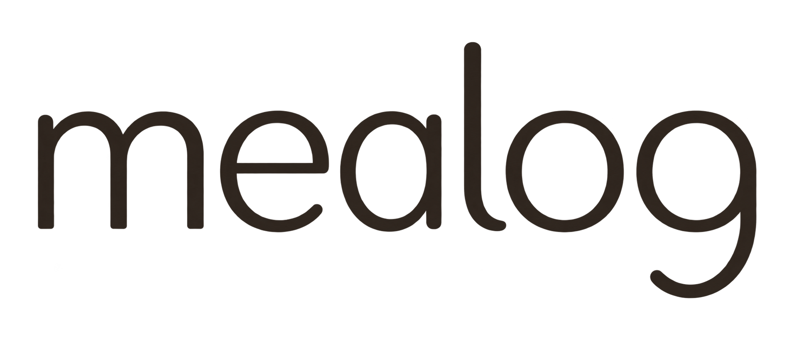

<!doctype html><html lang="zh"><meta charset="utf-8"><meta name="viewport" content="width=device-width,initial-scale=1"><title>Mealog · 字标候选</title><style>*{box-sizing:border-box}body{margin:0;background:#F7F3E7;color:#302B25;font:14px -apple-system,BlinkMacSystemFont,Arial,sans-serif}main{max-width:900px;margin:auto;padding:48px 32px}header{font-size:11px;letter-spacing:2px;color:#81776b}section{padding:48px 0 40px;border-bottom:1px solid #d5cebf}.master{display:block;width:min(100%,560px);margin:auto}p{font-size:13px;color:#81776b;line-height:1.8}.sizes{display:flex;align-items:center;gap:48px;flex-wrap:wrap}.small{width:110px;height:38px;object-fit:contain}.medium{width:150px;height:52px;object-fit:contain}.phone{max-width:390px;padding:12px 16px;border:1px solid #d5cebf;border-radius:12px;display:flex;align-items:center;justify-content:space-between;min-height:70px}.phone span{font-size:12px}.label{margin-top:0;font-size:11px;letter-spacing:1px}footer{padding-top:24px;font-size:12px;color:#81776b}@media(max-width:480px){main{padding:32px 24px}section{padding:32px 0}}</style><main><header>MEALOG / TYPOGRAPHIC IDENTITY / 02</header><section><p>小写人文字标 · 暖墨色 · 开放的字腔与轻弧尾</p></section><section><p class="label">SMALL SIZE STUDY</p><div class="sizes"></div></section><section><p class="label">MOBILE HEADER STUDY</p><div class="phone"><span>我的餐桌 ＋</span></div></section><footer>候选方案，待审美反馈。原 App 品牌尚未替换。</footer></main></html>
